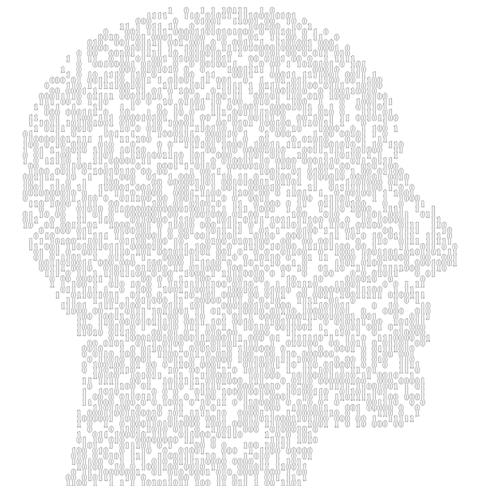

<div class="global animated fadeIn">
  <div class="center bg-dark">

      <h2>Bienvenu sur mon portfolio !</h2>

      

      <p>Je m'appelle Salem Bechina, je suis passionné d'informatique depuis tout petit.</p>

      
      <p>J'ai commencé l'informatique dans son aspect purement hardware en appréhendant certains points essentiels comme le fonctionnement d'un ordinateur et les différents organes qui le compose pour petit à petit basculer sur le fonctionnement software.</p>
      
      <p>J'ai à l'âge de 14 ans avec l'aide d'un ami développé mon premier site internet consacré à l'actualité du jeu vidéo en 2008 "Game-Spide".</p>
      
      <p>Puis par l'intermédiaire de mon baccalauréat professionnel SEN<span class="lower">*</span> en 2009, j'ai pu étendre mes connaissances de l'informatique côté réseau.</p>
      
      <p>Conscient des différentes possibilités d'évolutions dans le milieu informatique je décide donc de m'orienter vers le développement informatique en faisant un BTS IRIS<span class="lower">**</span>, après deux gros projets sur lesquels j'ai pu aimer et apprécier le développement j'ai su qu'il fallait que je continue sur cette voie.</p>
      
      <p>Ce qui explique la suite de mon parcours orienté sur le développement dans ça globalitée.</p>
      
      <p>En alternance depuis près de deux ans au sein de la société BioMérieux et au centre de formation de l'AFIP pour préparer un diplôme d'ingénieur en informatique, j'ai pu acquérir certaines compétences spécifiques notamment sur le développement d'application desktop (client lourd) JAVA.</p>
      
      <p>Vous trouverez dans ce portfolio tous les projets et compétences associées acquits durant ces deux ans.</p>

      <p class="lowerDescription">*Baccalauréat professionnel système électronique numérique, option télécommunication et réseau.<br>
        **Brevet de technicien supérieur en informatique et réseaux pour l'industrie et les services techniques.</p>
  </div>
</div>
